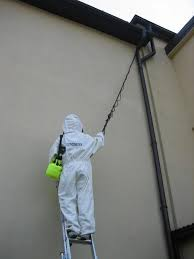

Oferta
Firma STERILEX DDD Paweł PAGACZ oferuje kompleksową obsługę systemu ochrony przed szkodnikami zgodnie z zasadami HACCP i GMP u klientów, związanych z branżą spożywczą polegającą na zastosowanium metod nowoczesnego monitoringu. Nasze usługi kierujemy do zakładów produkujących żywność, supermarketów, hoteli, restauracji, piekarni, cukierni i wszystkich innych zakładów żywienia zbiorowego. Obsługujemy również: obiekty użyteczności publicznej, placówki oświatowe, obiekty zabytkowe i sakralne, obiekty i środki komunikacji i transportu, obiekty nietypowe i inne.
Wykonujemy usługi między innymi w obiektach mieszkalnych, handlowych, przemysłowych, gastronomicznych, hotelarskich, przedszkolach, szkołach jak również na terenach zielonych. Ponadto wykonujemy usługi nietypowe takie jak likwidacja gniazd os, szerszeni, dezynfekcja pomieszczeń po denacie. Stosujemy preparaty i materiały posiadające aktualne atesty PZH oraz pozwolenia Ministerstwa Zdrowia. Obiekty, które obsługujemy mają prowadzoną przez naszych pracowników pełną dokumentację jak również sporządzamy szczegółowy opis zabiegów w postaci "Księgi sanitarnej obiektu". Dodatkowo dla poprawy bezpieczeństwa stosujemy oznakowanie miejsc w których umieszczamy nasze pułapki, chwytacze, karmniki deratyzacyjne, detektory owadobójcze, lampy owadobójcze, itp.
Liczymy na to, że doświadczenie Pracowników Sterilex DDD - Paweł PAGACZ oraz zakres świadczonych usług, pozwolą spełnić Twoje oczekiwania.


O Firmie
Firma STERILEX DDD Paweł PAGACZ powstała w 2008 roku z myślą o swoich Klientach, wszystkie usługi wykonywane są z największą starannością i precyzją przez wykwalifikowanych i przeszkolonych pracowników/serwisantów.